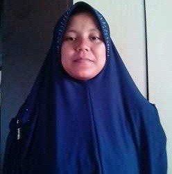
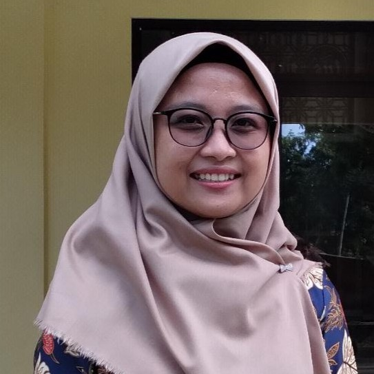

Profil Madrasah
Mengenal lebih dekat MTs AL-Munthohir Kabupaten Cirebon
Visi
"Mewujudkan generasi yang beriman, berilmu, berakhlak mulia, dan berprestasi berdasarkan Al-Quran dan As-Sunnah."
Madrasah tsanawiyah yang unggul dalam IMTAQ dan IPTEK, mandiri, dan berwawasan lingkungan.
Misi
- Menegakkan nilai-nilai keislaman dalam kehidupan sehari-hari
- Menyelenggarakan pendidikan berkualitas sesuai standar nasional
- Mengembangkan potensi akademik dan non-akademik siswa
- Membangun karakter kepemimpinan dan kemandirian
- Menciptakan lingkungan belajar yang kondusif dan islami
- Memperluas wawasan teknologi informasi siswa
Diribatkannya MTs AL-Munthohir
MTs AL-Munthohir didirikan oleh masyarakat Desa Putat dengan visi mendirikan madrasah unggulan di Kecamatan Sedong.
Penambahan Ruang Kelas
Pembangunan gedung baru untuk menampung jumlah siswa yang terus bertambah dengan fasilitas yang memadai.
Program Tahfidz & Digital
Pengenalan program tahfidz Al-Quran dan laboratorium komputer untuk melengkapi kurikulum.
Akreditasi & Prestasi
Meraih akreditasi dan berbagai prestasi di bidang akademik, olahraga, dan seni tingkat kabupaten.
Transformasi Digital Madrasah
Pengembangan website madrasah, sistem informasi akademik, dan peningkatan kualitas SDM pengajar.
Agung Oktriadi, S.S
Kepala MadrasahDudi Ahmad, S.Pd
Wakil Kepala KurikulumSiti Rahmawati, S.Pd
Wakil Kepala KesiswaanBambang Supriyadi, S.Pd
Wakil Kepala SaranaNur Halimah, S.Pd
Kepala Tata UsahaEko Prasetyo, S.Pd
Koordinator LitbangAsroni, S.Pd.I
PenjaskesDebi Maolana AKBAR, S.Pd
PrakaryaAnggi Krisma Diana, S.Pd
Bahasa IndonesiaRosmala, S.Pd
Matematika
Siti Solihah, S.Pd.I
MatematikaSadiah, S.Ag
Qur'an HadistSiti Masiroh, S.Pd.I
Aqidah Akhlak
Runika, S.Pd
Bahasa InggrisSuhaeni, S.Pd
IPA